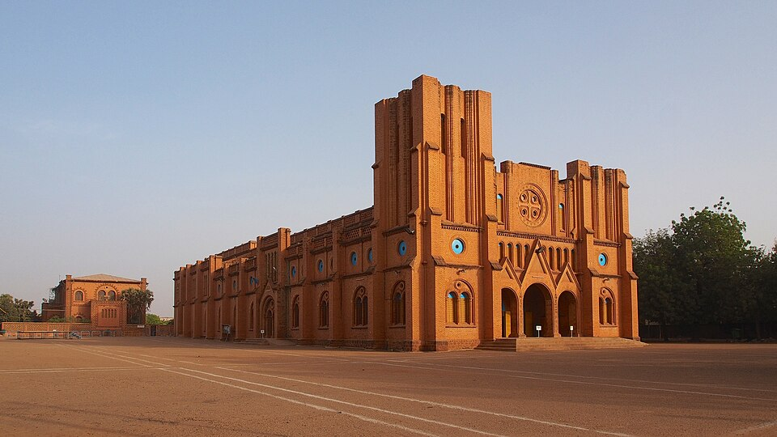

DESCRIPTION DE LA CATHEDRALE DE OUAGADOUGOU
La Cathédrale de l’Immaculée-Conception de Ouagadougou est un chef-d'œuvre architectural qui témoigne de l'implantation de l'Église catholique au Burkina Faso.
- Matériaux locaux et style mixte
- Façade inachevée
- Intérieur
L'édifice est entièrement construit en briques de latérite (terre cuite locale), ce qui lui donne sa couleur rouge-ocre unique et sa silhouette massive. Son architecture s'inspire du style roman-byzantin, caractérisé par des lignes sobres, des arcs en plein cintre et une nef imposante.
Sa façade principale se distingue par deux grandes tours carrées qui encadrent l'entrée. Ces tours sont restées plates au sommet, les flèches initialement prévues n'ayant jamais été construites.
L'intérieur offre un vaste espace de prière avec une nef centrale bordée de collatéraux, éclairée par des vitraux simples qui filtrent une lumière douce.
HISTORIQUE DE LA CATHEDRALE DE OUAGADOUGOU
- L'impulsion (1934)
- Le chantier (1934-1936)
- Bénédiction (1936)
La construction commence en 1934 sous la direction de Monseigneur Joanny Thévenoud, premier vicaire apostolique de Ouagadougou et figure clé de l'histoire religieuse du pays.
Le chantier titanesque mobilise des artisans maçons locaux formés par les missionnaires (les Pères Blancs). Les briques sont fabriquées et cuites sur place.
L'église est officiellement bénie et ouverte au culte le 19 mai 1936, devenant la plus grande cathédrale de toute l'Afrique de l'Ouest francophone à cette époque.
Elle reste le siège de l'archidiocèse de Ouagadougou et a accueilli des événements majeurs, dont la visite historique du Pape Jean-Paul II en 1980.
- Emplacement: situé à Koulouba
- Horaires: Ouvrables 7j/7 de 6h00 à 19h00
- Accès: Tous publics
- Géolocalisation: Voir la Cathédrale de Ouagadougou sur Google Maps